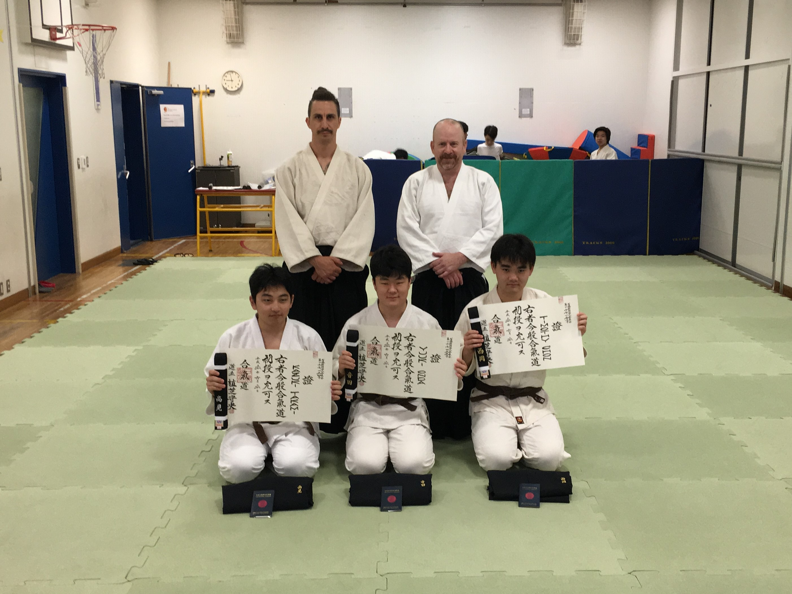
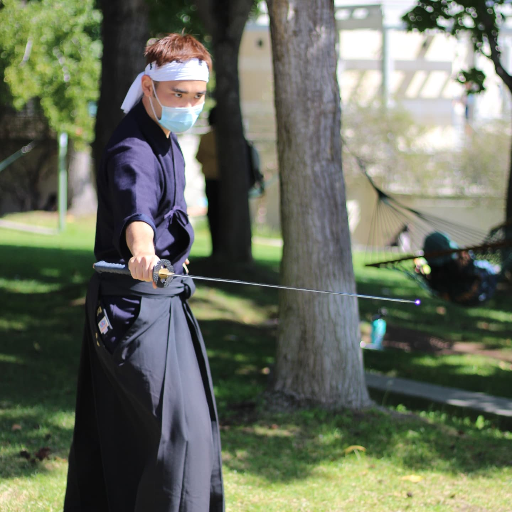

Welcome! My name is Timothy Daisuke Chon.
Who am I?

Good day! I am a 23 year old Japanese-Korean American that grew up in Tokyo. I have a great passion for technology and resource management, so much so, that in fact, I got a double bachelors from the University of California, San Diego in Economics and Computer Science. However, the most important thing to know about me is that I value growth above anything else. It's why I constantly practice martial arts to create that growth in myself, and it's what I bring to any organization I become a part of. I am confident that you will find use for my drive and work ethic. When that happens, I will not try, I will contribute to creating growth in your organization.
Education and Skills
University of California, San Diego - Economics B.A.
- Major Upper Division GPA: 3.501
- Awarded: December 2022
University of California, San Diego - Computer Science and Engineering B.S.
- Major Upper Division GPA: 3.313
- Awarded: December 2022
Overall GPA: 3.328
- Microeconomics A, B, C
- Macroeconomics A, B
- Econometrics A, C
- Decisions Under Uncertainty
- Game Theory
- Industrial Organization
- Advanced Data Structures
- Algorithm Design and Analysis
- Software Engineering
- Principles of Computer Operating Systems
- Intro to Computer Security
- AI: Search and Reasoning
- Intro to Modern Cryptography
List of favorite classes:
- Engineering Calculus A, B, C
- Discrete Mathematics
- Linear Algebra
- Microeconomics A, B, C
- Macroeconomics A, B
- Econometrics A, B, C
- Decisions Under Uncertainty
- Game Theory
- Industrial Organization
- Advanced Data Structures
- Theory of Computation
- Algorithm Design and Analysis
- Software Engineering
- Web Client Languages
- Intro to Computer Architecture
- Principles of Computer Operating Systems
- Programming Languages: Principles and Paradigms
- Intro to Computer Security
- Interaction Design
- AI: Search and Reasoning
- Intro to Modern Cryptography
- Recommender Systems and Web Mining
List of significant classes taken:
- Java - 4 years
- C/C++ - 3 years
- Python - 2 years
- HTML/CSS/Javascript - 2 years
- ARM Assembbly - 2 years
- System Verilog - 1 year
Programming Languages
- VIM
- Visual Studio Code
- Version Control - Git
- GDB + Valgrind
- JDB + JUnit
- Stata
Proficient Software Tools
- Java Standard
- JUnit
- C++ Standard
- Node.js
- Bootstrap
Familiar Frameworks/Libraries
- Agile Development
- Assertive Leadership
- Communication: Public Speaking, Debate, Cooperative Teamwork, Negotiation, Information Gathering
- Fast Learner
Other Skills
Projects

Bujo Studio
A Bullet Journal Application I developed with a team of 7 other students in my software engineering course...

3BC Processor
A custom processor specialized in error correction and repair that I developed with two other students from scratch...
Japanese Beer Analysis
A research exploration I conducted on market trends in the Japanese Beer Industry for my Industrial Organization course...

First Annual UCSD Kendo Tournament
A Kendo tournament that I organized with my management board in the year I was president...
Achievements
Academic
Despite all the extracurricular activities I have commited myself to outside of school, academic excellence has always been my main priority. I have worked tirelessly to maintain this excellence. Below are the fruits of my labor.
Provost's Award
- This is awarded to any students who complete a quarter with a GPA above 3.5
- Awarded: Fall 2019, Winter 2020, Spring 2020, Fall 2020, Winter 2021, Spring 2021
Martial Arts
Traditional Japanese Martial Arts has been, and will continue to be core to my development and identity. From getting thrown around on the mats in my childhood, to helping my Sensei teach Aikido in my adolescence, all the way to leading the Kendo and Iaido Clubs at UC San Diego, I have always made time to develop as a martial artist and as a person. Though the achievements I have gained are nice reminders of my growth, I value far more the discipline, perseverance, and drive I have built from consistent and constant practice.
All-Japan Aikido Federation - 1st Degree Black Belt
- Awarded: April 2018
Southern California Kendo Federation - 3rd Kyu Rank
- Awarded: April 2022
Mazuru Kai Iaido Dojo - 5th Kyu Rank
- Awarded: May 2022
2021 UCSD Kendo Tournament - 1st Place Advanced Division
- My team organized the UCSD Kendo Club's first Kendo tournament in its 25 year history. We had a pretty good showing of 30 or so members and I ended up winning.
- Awarded: November 2021
2022 San Diego Kendo-Bu Tournament - 2nd Place Yamamoto Cup
- This is an annual Kendo tournament that the San Diego Kendo-Bu Dojo holds for all its members in memory of the late John K. Yamamoto Sensei.
- Awarded: March 2022
2022 UCLA Yuhihai Tournament - 2nd Place Kyu Teams Division
- This is a prestigious Kendo tournament that UCLA hosts annually for all Kendo practictitioners in the UC schools to compete in.
- Awarded: April 2022
UCSD Kendo Club President
- Founded in 1998 by UCSD alumni and San Diego Kendo-Bu Dojo instructors, this club works to organize regular practices and introduce the students of UCSD to the popular Japanese martial art of Kendo. Kendo is a centuries old Japanese sword-based martial art practiced by millions of people from children to the elderly.
- Progressed from Secretary to Vice President to President over the four years I spent as a member of the club.
- With a management board of 10 other members, we:
- Expanded the club from 15 regular members to 80 following a severe stagnation from the COVID pandemic
- Taught proper etiquette when practicing in a dojo environment as well as lead warmups so members could practice without injuring themselves
- Organized the club's first tournament in its 30 year history
- Worked with other orgs on UCSD to organize demonstrations of Kendo and our club.
- Organized several team-building events and socials to build a tightly knit community
- Worked with martial arts supply vendors to supply members with the necessary practice equipment at lower costs in order to reduce barriers of entry
- Designed and sold club merchandise such as jackets and t-shirts to build a sense of unity within the club
- Organized fund raisers to subsidize tournament participation fees in order to further reduce said barriers of entries for members.
- Extensively mentored many fellow students in not only the martial art but also in schoolwork and life in general.
- Term: June 2021 - June 2022
UCSD Iaido Club President
- Lesser widespread than Kendo, Iaido is also a centuries-old Japanese sword art. Compared to Kendo, an emphasis is placed on constant repetition of certain drills as well as draws from the sheath.
- Starting as the only manager and member of the club, I:
- Expanded the club from just myself to 15 regular members. The club was on the verge of completely disappearing following the COVID pandemic.
- Recruited 3 members to found a managerial board
- Organized fund raisers to subsidize practice equipment costs for new members.
- Created guidelines of best management practices that I learned from leading the larger Kendo club.
- Term: June 2020 - June 2022
Speech and Debate
For many people including myself, public speaking causes more fear and anxiety than death itself. However, in my personal pursuit to become a stronger person than yesterday, I took it upon myself to conquer that fear and pick up some speaking skills in the process.
Close to the Coast Novice Division - 3rd Place
- This was the first and only debate tournament I participated in in the US at the collegiate level. Debates were held in the IPDA format, one that was unfamiliar to me at the time but I learnt it on the fly and ended up getting third place, contributing to the nascent club's growing reputation.
- Awarded: January 2019
Kanto Plains Varsity Debate Tournament - 1st Place
- This is an annual tournament held among the international school community in the Kanto Plains region of Japan. Several schools including mine would meet up weekly to hold practice debates all for this tournament. The tournament used a modified version of the Extended Mace format. I worked with a team of two other debators and my role was to set up arguments for my side as well as start probing the opposition's arguments for weaknesses.
- Awarded: February 2016 and February 2018
St. Mary's International School Varsity Debate Captain
- I was voted to be captain for our 8 man Varsity team of debators. I personally led a team of two other students in the actual debates but as captain, I
- Set up team meetings to discuss the topic we were given to debate, formulate arguments, and write speeches
- Scouted the Junior Varsity team for promising talent and recommended them to the coaches for additional training
- Read teammates speeches and gave advice/suggested edits where necessary
- Organized the logistics behind setting up rooms and cleaning up whenever practice debate sessions were held in our school.
- Won the Varsity Championships in the year I was captain.
- Term: October 2017 - October 2018
Contact Me


 Copy tchon@ucsd.edu to clipboard
Copy tchon@ucsd.edu to clipboard